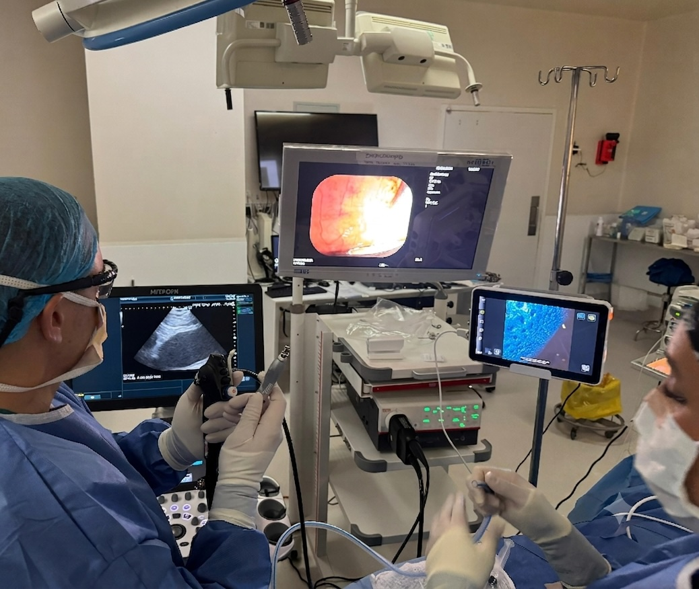
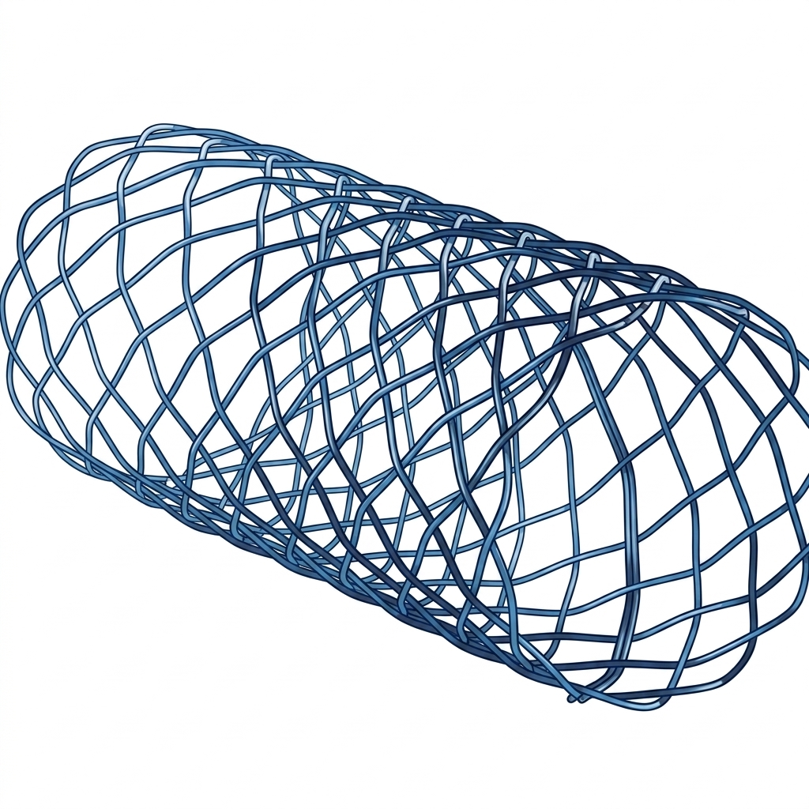

Diagnóstico y tratamiento
endoscópico del
aparato respiratorio
Broncoscopía avanzada con CryoEBUS, EBUS-TBNA y navegación aumentada. Procedimientos ambulatorios, sin cirugía abierta, con máxima precisión diagnóstica.
Información para el paciente
¿Qué es la
broncoscopía?
Es un procedimiento que permite visualizar el interior de las vías respiratorias — tráquea, bronquios y pulmones — con una cámara ultra delgada que se introduce por la boca o nariz, bajo sedación. Sin cortes ni hospitalización en la mayoría de los casos.
Preparación
Ayuno de 6 horas. Anestesia local en garganta + sedación IV. Procedimientos complejos: anestesia general (TIVA).
Procedimiento
El broncoscopio (tubo flexible con cámara de 3-6 mm) se introduce guiado por video. Duración: 20-60 minutos.
Recuperación
Observación de 2-4 horas. Alta el mismo día en procedimientos diagnósticos. Sin cortes ni puntos.

Especialidades
Qué procedimientos realizamos
Cobertura completa en broncoscopía diagnóstica e intervencional.
EBUS · CryoEBUS
Biopsia mediastínica guiada por ultrasonido. La criosonda simultánea entrega muestras más grandes y mayor rendimiento diagnóstico para cáncer y linfomas.
Ver detalle →Broncoscopía Intervencional
Ablación tumoral endobronquial con electrocoagulación, APC, láser y criobiopsia. Colocación de stents traqueobronquiales para obstrucciones malignas y benignas.
Ver detalle →Navegación Aumentada
Broncoscopía con navegación por fluoroscopía aumentada para nódulos pulmonares periféricos. Acceso a lesiones no accesibles con broncoscopio convencional.
Ver indicaciones →CryoEBUS:
la criosonda que
lo cambia todo
Combina el ultrasonido endobronquial (EBUS) con una criosonda para obtener muestras de mayor tamaño. Diagnóstico de alta precisión en una sola sesión — cáncer pulmonar, linfomas y sarcoidosis.
Muestras histológicas superiores
La criosonda extrae biopsias 4-6 veces más grandes que la aguja convencional (EBUS-TBNA). Preserva la arquitectura tisular para inmunohistoquímica completa.
Un solo procedimiento
Estadificación mediastínica + biopsia diagnóstica en una sesión. Reduce el tiempo diagnóstico de semanas a días.
Alta sensibilidad diagnóstica
Rendimiento diagnóstico superior al 90% para neoplasias mediastínicas e hiliares. Acceso a 14 estaciones ganglionares mediastínicas.

CryoEBUS en Clínica Las Condes
Dr. David Lazo Pérez — pionero en Chile
¿Cuándo se indica?
Indicaciones frecuentes
La broncoscopía permite diagnóstico y tratamiento en una amplia variedad de condiciones respiratorias.
Nódulo pulmonar sospechoso
Biopsia guiada por navegación o radioscopia para nódulos periféricos o centrales. Diagnóstico sin toracotomía.
DiagnósticoAdenopatías mediastínicas
EBUS-TBNA para estadificación de cáncer pulmonar y diagnóstico diferencial de linfomas, sarcoidosis y tuberculosis.
DiagnósticoHemoptisis
Localización del punto sangrante y tratamiento intervencionista (electrocoagulación, APC, crioterapia) en una misma sesión.
TratamientoObstrucción de vía aérea
Ablación tumoral y colocación de stents traqueobronquiales en obstrucciones malignas o post-trasplante.
TratamientoDerrame pleural / Masa mediastínica
Estudio diagnóstico completo con muestras de calidad para análisis citológico, histológico y microbiológico.
DiagnósticoEstenosis traqueal
Dilatación con broncoscopio rígido, crioterapia y colocación de prótesis en estenosis cicatrizales o tumorales.
TratamientoBroncoscopía Intervencional
Tratamiento de la vía aérea sin cirugía abierta
La broncoscopía rígida combinada con técnicas de ablación permite tratar tumores endobronquiales, estenosis y obstrucciones con mínima invasión y bajo anestesia general.
Electrocoagulación y APC
Resección tumoral por coagulación eléctrica o plasma de argón. Control inmediato de la hemoptisis endobronquial.
Crioterapia y Criobiopsia
Congelación tisular para ablación tumoral y obtención de biopsias de mayor tamaño con mínimo daño mecánico.
Stents Traqueobronquiales
Prótesis metálicas o de silicona para mantener la vía aérea permeable en obstrucciones malignas o cicatrizales.
Terapia Láser
Vaporización de tejido tumoral con precisión milimétrica para recuperación del lumen bronquial.

Para médicos referentes
Protocolo de derivación
Información técnica para médicos que requieren derivar pacientes a broncoscopía intervencional avanzada.
| Procedimiento | Indicación principal | Tipo |
|---|---|---|
| EBUS-TBNA | Estadificación cáncer pulmonar, adenopatías mediastínicas | DX |
| CryoEBUS | Biopsia mediastínica de mayor rendimiento, linfomas, sarcoidosis | DX |
| Criobiopsia transbronquial | Enfermedad pulmonar intersticial difusa | DX |
| Ablación / Broncoscopía rígida | Tumor endobronquial obstructivo, hemoptisis | TX |
| Stent traqueobronquial | Estenosis maligna o benigna, fístulas | TX |
| Navegación aumentada | Nódulo pulmonar periférico, biopsia guiada | DX |

Especialista
Dr. David Lazo Pérez
Cirujano Torácico · Broncoscopía Intervencional
Médico-cirujano de la Pontificia Universidad Católica de Chile, con especialización en Cirugía Torácica por la Universidad de Chile y formación en Trasplante Pulmonar en el Hospital Universitario Puerta de Hierro Majadahonda, España.
Con 19 años de experiencia, es el cirujano con mayor experiencia en EBUS en Chile (desde 2010, +3.200 procedimientos) y pionero en la técnica CryoEBUS a nivel latinoamericano. Regente para Chile de la Asociación Mundial de Broncología y Neumología Intervencionista (WABIP).
Preguntas frecuentes
Lo que más nos preguntan
Primer paso
Hable directamente
con el especialista

Dr. David Lazo Pérez
Cirujano Torácico